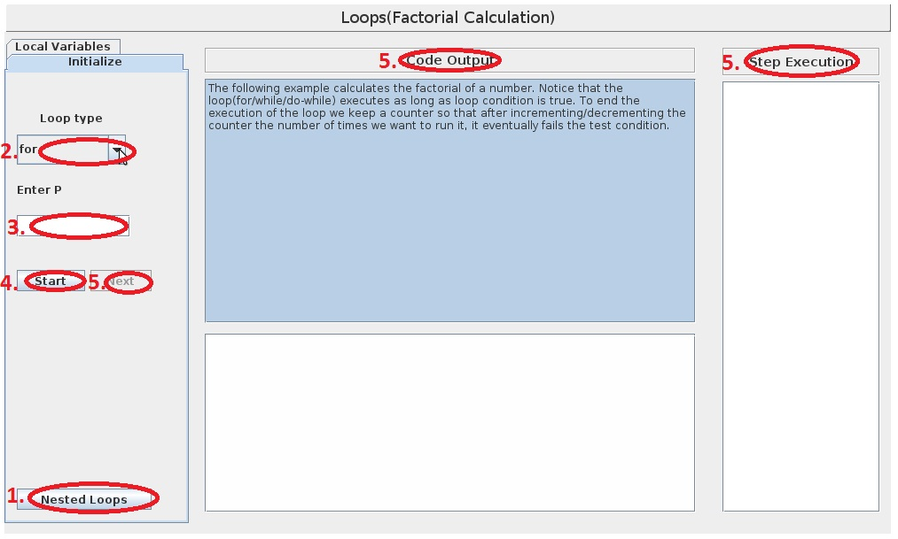
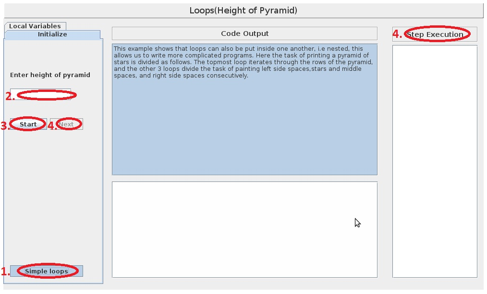

A program can be thought of as a sequence of instructions which are followed by a computer to solve a problem. The sequence in which these instructions are executed can be different from the sequence in which they are specified. Control flow (or alternatively, flow of control) refers to the order in which the individual statements or instructions of a program are executed or evaluated. This changing of the order of execution of instructions can be unconditional or conditional. The former case clearly specifies form while line the execution should be resumed. The latter case, this decision about form which line the exection should be resumed is made based on the value of an expression. Hence, it can be used to implement "decision-making" which means selection of one alternative amongst several others according to given conditions. An example of "decision-making" in the real world could be: "If the traffic light is green, keep moving; if it is red, then stop". In the case of programmming, "decision-making" essentially means deciding from which statement the execution should be resumed.
Some constructs allow skipping a set of instructions if a condition is false, whereas, some others execution of only one set of statements based on the truthfulness of a condition. These constructs can be placed inside another to create more complex flow of control. This enclosing of structures into one another is called nesting. A switching construct allows decision-making based on the state of a variable or an expression. Its purpose is to allow the value of a variable or an expression to control the flow of program execution via a multiway branch. These constructs are known as conditionals because they alter the flow of control based on a condition.
Programming languages also allow direct continuation of execution of a statement at a different location using unconditional branch or jump statements for which no condition is required to be evaluated. These can even be used to stop the execution of the program.
Apart from this, there is another class of constructs called loops, which can be used to repeat a set of instructions. This repetition can be done a fixed number of times or until some specific condition is met. Just like the conditionals, the loops can also be nested. Loops and conditionals can also be nested inside each other.
In this lab, we shall see the working of looping constructs.
In order to understand the working of looping constructs, it is important to understand the term block. A group of code statements that are associated and intended to be executed as a unit is referred to as a block. In C, the beginning of a block of code is denoted by writing a set of statements with in curly braces. It is not necessary to place a semicolon after the end of a block. Blocks can be left empty. A block and can be written inside another block of statements, in such a case the former block is said to be nesting inside the other block.
A loop is a construct that instructs the computer to repeatedly execute a certain block of code until a certain condition is met or for a certain fixed number of times. Every such repetition is called an iteration. Break statement can be used to exit a looping construct and a Continue statement can used to start another iteration at any point. A looping construct typically has three sections:
for(initialization; test expression; update statements) {
statements1;
}
initialization;
while(test expression){
statements1;
update statements;
}
do{
statements1;
update statements;
}while(test expression);
1. To learn how decision making is done while programming.
2. To learn about the various advanced constructs used for control flow in order to achieve repetition of instructions.
1. Choose experiment type by pressing the "Switch experiment" button on the bottom left. Experiment 1:
Here we shall see how various looping constructs can be used to find the factorial of a positive integer.
2. Select the looping construct with which you want to solve the problem. 3. Enter the number for which factorial has to be calculated and press OK. 4. Press Start to start the experiment. At any time the experiment can be restarted by pressing reset. 5. Click Next to get a step by step execution of the code along with comments which are displayed at the bottom. 
Experiment 2:
Here we shall see how nesting of loops can be done to create a pattern of any size that looks like a pyramid.
2. Enter the height of pyramid and press OK. 3.Press Start to start the experiment. At any time the experiment can be restarted by pressing reset. 4. Click Next to get a step by step execution of the code along with comments which are displayed at the bottom. 